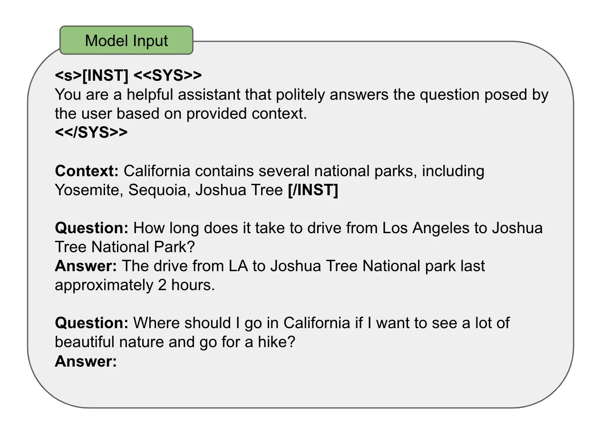
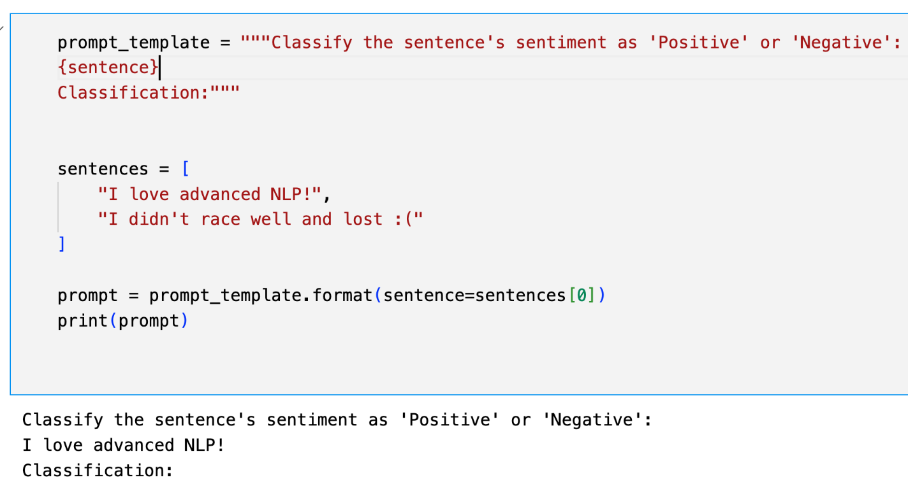
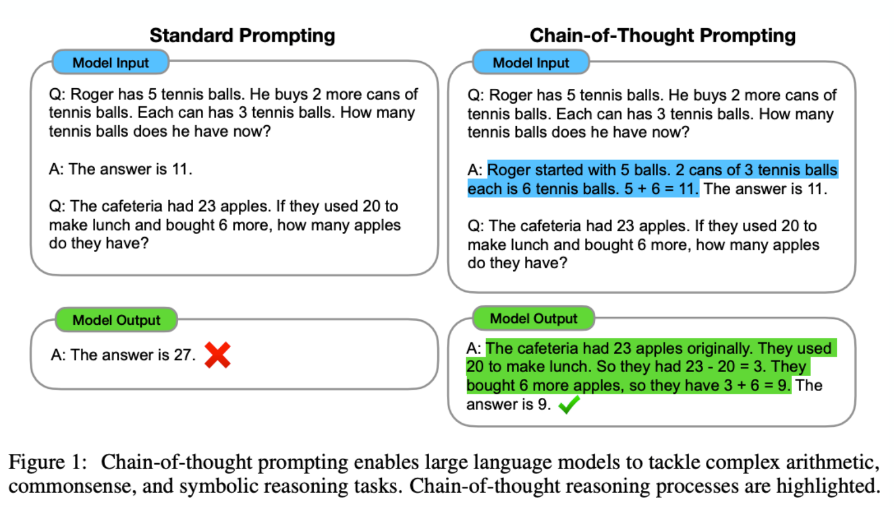
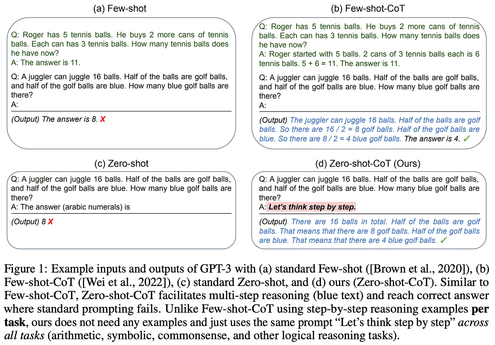
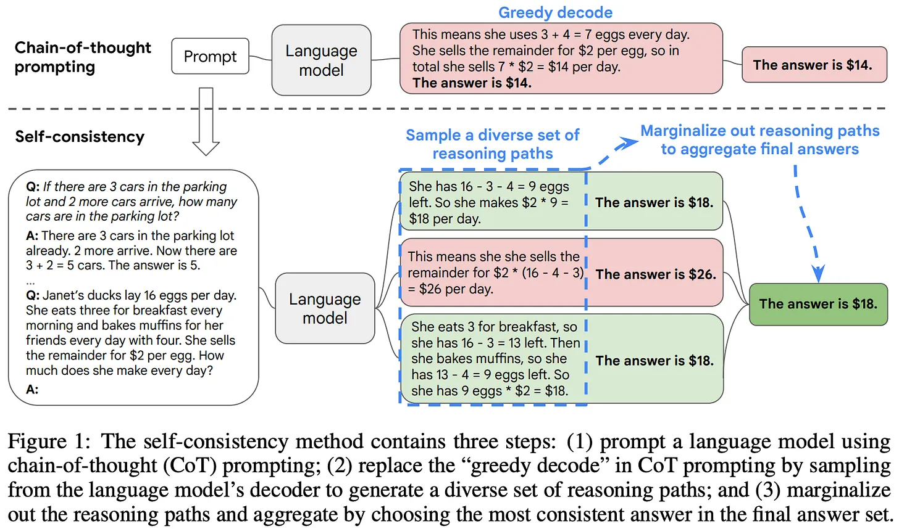
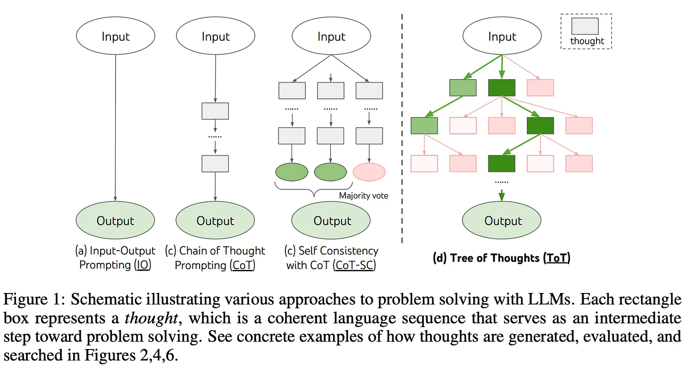
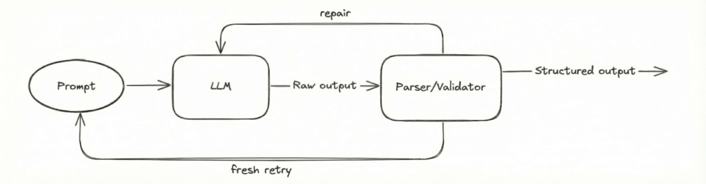

Prompting, Structured Outputs
Large Language Models : A Hands-on Approach
Overview
- Prompting
- Structured Outputs
RECAP
- Decoding strategies
- Greedy,
- Beam Search,
- Sampling,
- Top-k,
- Top-p
- min-p
“Input was fixed, decoding strategy changed”
Today : “Vary the input, keep decoding strategy fixed”
Prompting
Prompting is the process of designing input text to elicit desired outputs from a language model.
\(p_\theta(y|f(x))\) is the probability of output \(y\) given input \(x\) under model parameters \(\theta\).
x : “I love LLMs”
f(x) : “Translate to French: I love LLMs”
y : “J’aime les LLMs”
Prompt Components
Most prompts consist of the following components:

Prompting Strategy : No Prompt
After pre-training, we have an autoregressive language model \(p(x_1, x_2, ..., x_T)\)
Prompt: \(x_{1:t}\) -> “When a dog sees a squirrel, it will usually”
Output: \(x_{t+1:T}\) ->
- “bark a lot, especially at close range.”
- “start to chase after it. When it does…”
Prompting Strategy : Zero Shot Prompting
Zero-Shot Prompting
- when you provide a task description and input without any examples
Prompt
- f(x:instruction) = “Translate to French: I love LLMs”

Few Shot Prompting
Few-Shot Prompting
when you provide a task description, input, and a few examples of input-output pairs.
provide
(x,y)examples in the promptPrompt: \(f(x_{test}; instruction, [(x, y)_1, \ldots, (x, y)_K])\)
Output:
y_test
Example:
Few-shot prompting is a powerful technique that allows the model to learn from examples without any parameter updates, often referred to as “in-context learning”.
In-context Learning
In-context Learning
- the ability of a language model to learn and perform tasks based on the context provided in the input prompt, without any parameter updates.
- ICL: provide
(input, output)pairs as examples
- Ability to leverage many examples varies by model size and architecture

Chain of Thought Prompting
Wei et al. (2022)
Encourage the model to generate intermediate reasoning steps before giving the final answer.
Approach: Provide examples in the prompt that include the reasoning process, or explicitly ask the model to “think step by step”.
CoT with examples (few shot CoT)

Chain of Thought Prompting
- Models can generate reasoning steps even without examples

Chain of thought data in pretraining corpus may contribute to this ability, but explicit prompting can enhance it significantly.
System prompts that encourage step-by-step reasoning can also improve performance on complex tasks, even without few-shot examples.
CoT Benefits

CoT Benefits
CoT prompting can significantly improve performance on complex reasoning tasks, especially as model size increases.
Interpretability: the LLM’s generated chain of thought can be used to better understand the model’s final answer.
Applicability: CoT prompting can be used for any task that can be solved by humans via language.
Prompting: no training or fine-tuning is required of any LLMs. We can just insert a few CoT examples into the prompt!
CoT - Zeroshot
- Even without examples, simply asking the model to “Let’s think step by step” can improve performance on reasoning tasks:

CoT - Self-Consistency
- Instead of generating a single chain of thought, generate multiple reasoning paths and take a majority vote on the final answer:

CoT - Least-to-Most Prompting
- Decompose a complex problem into a sequence of simpler subproblems, and solve them in order:

Limitations of Linear CoT
- CoT follows left to right reasoning, but some problems may require exploring multiple reasoning paths in parallel, backtracking, lookahead or revisiting previous steps
- No backtracking: Once a step is generated, the model cannot revise it
- Local error propagation: Early arithmetic errors cascade irreversibly
- Exploration vs. Exploitation: Single path cannot explore alternative solution strategies
Tree of Thoughts (ToT) Prompting
- Similar to Least to Most, but with more flexibility in how the subproblems are defined and solved

Tree of Thoughts (ToT) Prompting
- ToT allows for this by maintaining a tree of possible reasoning paths and exploring them systematically

ToT Example
MODEL = "gpt-5.3"
SYSTEM_PROMPT = """You are an expert problem solver using Tree-of-Thought reasoning."""
USER_PROMPT = """
Using numbers 3, 7, 9, 25, reach 24 using +, -, *, /.
At each step:
1. Propose 3 candidate next operations
2. Evaluate each (score 1-10)
3. Pick the best and continue
Be structured and concise.
"""
def generate_thought(state):
response = client.chat.completions.create(
model=MODEL,
messages=[
{"role": "system", "content": SYSTEM_PROMPT},
{"role": "user", "content": state}
],
temperature=0.7,
)
return response.choices[0].message.content
def tree_of_thought(max_steps=5):
state = USER_PROMPT
for step in range(max_steps):
print(f"\n--- Step {step+1} ---")
output = generate_thought(state)
print(output)
# Append reasoning to state (this is the "tree expansion")
state += "\n" + output
return state
if __name__ == "__main__":
final_trace = tree_of_thought()ToT Examples

Reasoning Landscape
The System 1 / System 2 in LLMs
Modern LLMs exhibit two distinct operational modes that mirror Kahneman’s cognitive frameworks:
System 1 : Intuitive Pattern Matching
- Immediate next-token prediction
- Style transfer, translation, pattern completion
- “The capital of France is ___” ->
"Paris"
System 2 : Deliberate Reasoning
- Multi-step computation requiring working memory
- Mathematical derivation, logical deduction, multi-hop retrieval
- “If a train travels 60 km/h for 45 min then 80 km/h for 90 min, what is the average speed?”
Why Does Externalizing Thought Help? (Computation-Depth View)
A standard transformer has a fixed computation graph per token: \(L\) layers × \(H\) heads.
- Each forward pass has bounded computation depth
- Problems requiring more than \(O(L)\) serial steps cannot be solved in one pass
- This holds regardless of model size
CoT : Emitting intermediate tokens lets the model recurse through its own weights
- Turns a feed-forward network into something closer to a bounded-depth RNN
- Each new token’s forward pass can read all prior intermediate tokens via attention
Theoretical results:
- Feng et al. (2023): Constant-depth transformers provably cannot solve arithmetic or dynamic programming in one pass, but can with CoT of length linear in the input.
Takeaway: CoT converts a fixed-depth parallel computer into an adaptive-depth one — the theoretical justification for why reasoning-heavy tasks demand long output sequences.
Why does CoT work at all?
1. Distributional shift
- The trigger phrase shifts the output distribution toward text resembling worked examples from pre-training (textbooks, Stack Exchange, tutoring dialogues)
2. Scratchpad as adaptive compute
- Each emitted token grants the model another forward pass conditioned on all prior tokens
- The prompt effectively unlocks the computation-depth argument
These are not mutually exclusive : CoT works because
- the model has seen such traces during pre-training and
- emitting them unlocks additional serial compute.
CoT Limitations
The Faithfulness Problem
Unfaithful Reasoning: CoT may be post-hoc rather than true computation trace.
Intervention studies:
Suppression: Add “…therefore [wrong answer]” to CoT -> Model often follows conclusion despite contradictory reasoning
Augmentation: Add factual context mid-generation -> Model ignores new information if already committed to path
Self-Correction Paradox
- Without external feedback, asking “Are you sure?” often degrades performance
- Effective self-correction requires either:
- External verification (code execution, search)
- Explicit training on self-refinement (RL with process rewards)
Base vs Instruction-tuned Models
- Base (Pre-trained) Models: Trained on massive datasets for next-token prediction.
- Good at: Text completion, few-shot learning.
- Example:
smollm3-3B-base(Requires specific phrasing to evoke desired behavior).
- Instruction-tuned (IT) Models: Fine-tuned on (Instruction, Output) pairs and preference data (RLHF/DPO).
- Good at: Following direct commands, conversational dialogue, helpfulness, and safety.
- Example:
smollm3-3B(Optimized for chat interfaces).
- Key Difference: Same architecture and (mostly) the same pre-trained knowledge, but the weights have been further tuned on instruction/preference data. IT models are conditioned to act as assistants and usually adhere to specific Chat Templates.
Chat Templates
Many models are fine-tuned as chatbots with messages format:
Roles:
System: Sets behavior and context for the conversation
User: Provides input or asks questions
Assistant: Model’s responses
Chat Format: Llama 3 Example
Messages are converted to strings with special tags:
messages = [
{
"role": "system",
"content": "You are a helpful assistant that helps a student understand complex topics"
},
{
"role": "user",
"content": "Can you explain how photosynthesis works?"
}
]
input_text = tokenizer.apply_chat_template(messages, tokenize=False)
print(input_text)
# Output:
<|begin_of_text|><|start_header_id|>system<|end_header_id|>
You are a helpful assistant that helps a student understand complex topics
<|start_header_id|>user<|end_header_id|>
Can you explain how photosynthesis works?Every model family has a different template. Chosing the wrong template for a model produces garbage outputs:
- Mistral:
[INST] ... [/INST] - Qwen:
<|im_start|>system\n...<|im_end|>\n<|im_start|>user\n...<|im_end|> - Gemma:
<start_of_turn>user\n...<end_of_turn>\n<start_of_turn>model
System Prompts
Components:
- Knowledge cutoff date
- Step-by-step reasoning instructions
- Harmful request handling
- Markdown formatting guidelines
- Word/letter counting rules
Example : Claude’s system prompt

Example System Prompt
messages = [
{
"role": "system",
"content": "You are a helpful assistant that helps a student understand complex topics"
},
{
"role": "user",
"content": "Can you explain how photosynthesis works?"
}
]
input_text = tokenizer.apply_chat_template(messages, tokenize=False)
inputs = tokenizer(input_text, return_tensors="pt")
outputs = model.generate(**inputs, max_new_tokens=200, do_sample=True, temperature=0.7, top_p=0.9)
print(tokenizer.decode(outputs[0], skip_special_tokens=True))- Can help to control model behavior
- Specify task set
- Define response properties (language, style)
- Control formatting
Ultimately these are inputs to model : \(p_\theta(y \mid \text{prompt}(x))\)
Structured Output Generation
- Embedding LLMs in larger systems requires that they can communicate with the larger system, e.g., with JSON, XML, or other structured formats.
- Can we force LLMs to generate structured outputs?
Whatsapp Message:
“I want to order a pizza with pepperoni and mushrooms, and I want it delivered to 123 Main Street by 7 PM.”
Structured Output Generation - The Challenge
Challenges:
- LLMs are trained to generate natural language, not structured data
- LLMs may produce outputs that are not valid JSON or do not conform to the expected schema
- Can’t handle structured outputs with prompts alone
Solutions:
- Output validation and correction
- Constrained decoding
- Specialized training or fine-tuning for structured output generation
Constrained Decoding for Structured Output
Example : JSON
At each decoding step, there are only a small number of choices that will result in valid JSON
Can we write down all the rules that will produce JSON?
“Taylor Swift was born December 13, 1989”
Template-based Constrained Decoding
- Compile the schema into a state machine/regex/grammar.
- Filter the next-token distribution for valid tokens
| Key | Type |
|---|---|
| name | string |
| birth year | int |
| Token | Prob. |
|---|---|
| \n | |
| ” | |
| { | 0.026 |
| https | |
| … | … |

Unconstrained Decoding for Structured Output
Constraint Decoding : Complex, brittle, not generalizable to new schemas and slow decoding
Unconstrained Decoding : Generate free-form text and then parse it into structured format
How to ensure valid structured output?
- Prompting
- good prompt
- example outputs
- system instructions
- Output validation and correction
- Extract and clean
- Parse the output and check if it conforms to the schema
- If not, provide feedback to the model and ask it to correct its output

In Practice: Structured Output Generation
Libraries:
- Pydantic
- Outlines
- BAML
Inference Engines:
- llama.cpp
- vLLM/SGLang
- Hugging Face Transformers
Model Providers:
- OpenAI : Structured Outputs
- Gemini : Response Schema
Summary
- Decoding strategies balance between determinism, diversity, and computational efficiency
- Prompting techniques can significantly influence model behavior and output quality
- Chain of Thought prompting helps LLMs break down complex problems into manageable steps, improving reasoning capabilities
- Structured output generation is crucial for integrating LLMs into larger systems, and can be achieved through constrained decoding or unconstrained decoding with validation and correction.
Further Reading
- Beyond Decoding: Meta-Generation Algorithms for Large Language Models
- Structured Output Generation with LLMs
- Prompt Engineering Guides from OpenAI, Google, Anthropic